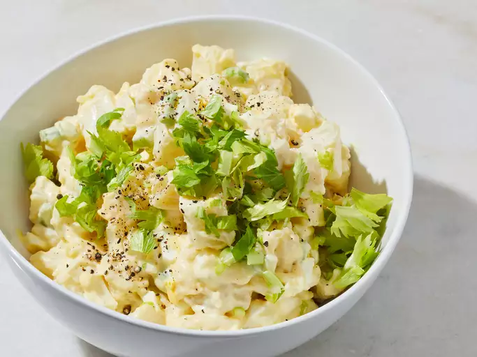

World's Best Potato Salad

Description
Potato salad is a salad dish made from boiled potatoes, usually containing a dressings and a variety of other ingredients such as boiled eggs and raw vegetables.
Potato salad is found in several countries in Europe. The German Kartoffelsalat, is one of the most famous that was spreading largely throughout Europe, North America, and later Asia. American potato salad most likely originated from recipes brought to the U.S. by way of German and other European immigrants during the nineteenth century.
Ingredients
- 6 medium potatoes
- 1/2 cup white sugar
- 2 large eggs, beaten
- 1 teaspoon cornstarch
- salt to taste
- 1 (5 ounce) can evaporated milk
- 1/2 cup vinegar
- 1 teaspoon prepared yellow mustard
- 1/4 cup butter
- 1 cup mayonnaise
- 6 large hard-cooked eggs, diced
- 1 small onion, finely chopped
- 1 cup celery, chopped
- 1 teaspoon salt
Steps
- Place potatoes in a large pot and cover with salted water; bring to a boil. Reduce heat to medium-low and simmer until tender, about 20 minutes. Drain and set aside to cool.
- While the potatoes are cooking, whisk together sugar, 2 beaten eggs, and cornstarch in a saucepan; season with salt.
- Stir in milk, vinegar, and mustard. Cook and stir over medium heat until thickened, about 10 minutes. Remove from heat and stir in butter. Refrigerate until cool, then stir in mayonnaise.
- Peel and dice potatoes. Transfer to a large bowl; toss with hard-cooked eggs, onion, celery, and 1 teaspoon salt.
- Stir dressing gently into the bowl of potato salad until evenly coated.
- Chill before serving, 3 hours to overnight.